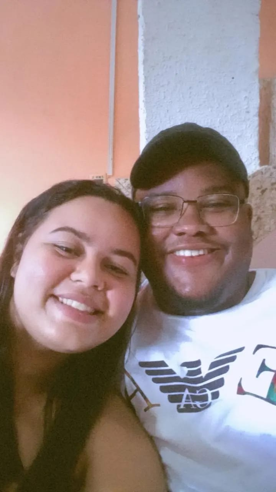

❤️
❤️
❤️

Feliz Aniversário, meu amor! 💖
❤️
"Cada momento ao seu lado é um presente. Hoje celebramos a sua vida e o nosso amor, que só cresce com o tempo. Te amo, feliz aniversário!" 🎉
Ir para a próxima página